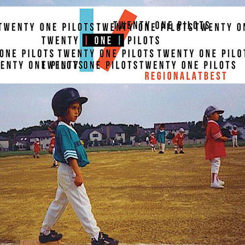
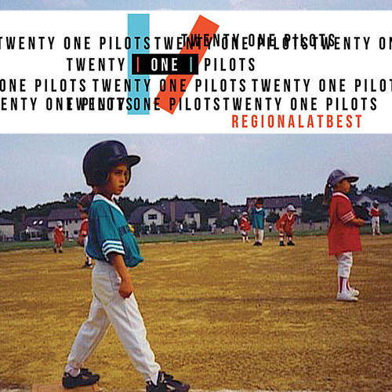
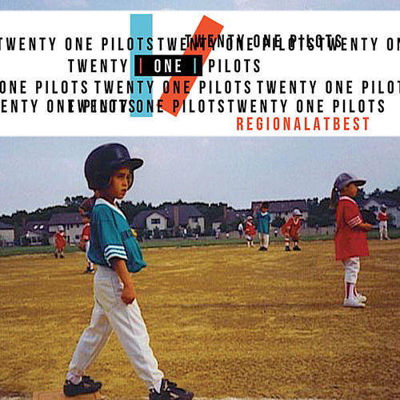

Twenty One Pilots es una banda estadounidense formada en 2009 en Columbus, Ohio, por el vocalista y multiinstrumentista Tyler Joseph, junto a los exintegrantes Nick Thomas y Chris Salih, quienes dejaron el grupo en 2011. Desde entonces, la formación principal ha consistido en Tyler Joseph y el baterista Josh Dun.
La estética visual de Twenty One Pilots es un aspecto crucial de su identidad. En el álbum Blurryface, Tyler solía pintarse el cuello y las manos de negro, simbolizando las inseguridades. Además, ambos miembros del dúo son conocidos por usar ropa y máscaras distintivas que cambian según la narrativa de cada álbum.
Con sus letras auténticas y su sonido innovador, Twenty One Pilots ha cultivado una base de fans leal conocida como el “Skeleton Clique”. Han ganado varios premios, incluidos Grammys, y siguen siendo una de las bandas más originales y multifacéticas en la música popular actual. Su habilidad para fusionar géneros y tratar temas profundos ha asegurado su posición como una banda icónica en el panorama alternativo moderno.
